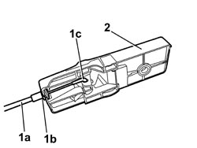

7005C52 FRONT DOOR OPENING INTERIOR HANDLE (ONE), LEFT OR RIGHT - R.R. WITH DOOR PANEL REMOVED
- Path
- Procedures > 70 FITTINGS > 7005 PASSENGER COMPARTMENT FRONT SIDE DOORS > 7005C FRONT DOOR LOCK CONTROLS > 7005C52 FRONT DOOR OPENING INTERIOR HANDLE (ONE), LEFT OR RIGHT - R.R. WITH DOOR PANEL REMOVED
- Kind
- repair procedure (removal / refitting; the operation number is the code)
- Applies to
- all engines; all production periods
- Interactive page
- https://sloeber94.github.io/elrnDB/#/939011124
Applies to: all engines; all production periods
 Removing
Removing
 Refitting
Refitting1. Disconnect the rod (1a) from the retainer (1b), then from the retainer (1c) for the interior handle.
2. Keep the interior handle assembly.

Applies to: all engines; all production periods
Refitting
Removing- Check that the interior handle is not damaged.
- Connect the rod to the interior handle retainers.